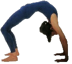
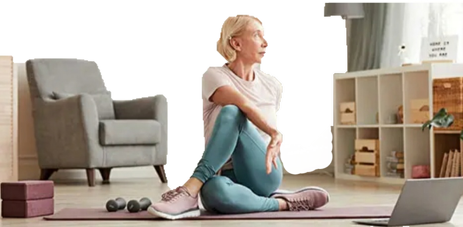
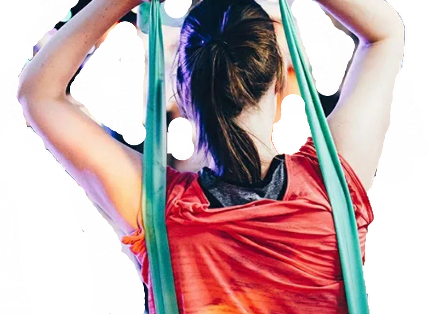
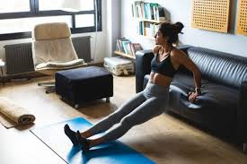

Desarrollar tu potencial es una habilidad o cualidad natural que pede ser dessarrollada
y depende de su interés y motivacíon. Otras personas y situaciónes influyen
sobre la posibilidad de alcanzar su máximo potencial; pero debe
ser consciente de qué quiere alcanzar por sí mismo. Todos nosotros en
algúna parte de nuestras vidas hemos sentido que nada importa; pero esto
tiene solución. Algunos problemas influyen en nuestro trivial dia. Un
aspecto fundamental es nuestro propio autoestima que se encarga de demostrarnos
lo malo que nos encontramos en nuestra salud mental y afectiva. pero
Qué tan fácil es reconocer
nuestras propias fobias que se encargan de moldear nuestro autoestima y motivación?
Como encontrarnos a nosotros mismos y como encontra esa labor que nos permita superarnos, crecer como personas
y contribuir a la sociedad?
EJERCICIOS SALUDABLES DESDE LA COMODIDAD DE SU HOGAR
Para hacer actividades que ayuden a fortalecer los músculos, y ayudarle a
quemar más calorías. puede levantar pesas, utilizar bandas de goma
o ligas grandes de resistencia, hacer flexiones o abdominales, o hacer quehaceres
domésiticos, que le hagan levantar algún peso. Hacer actividades de
fortalecimiento 2 ó 3 días a la semana, no le hará "demasiado
musculoso". Solamente el entrenamiento intenso para endurecer los músculos,
combinado con la genética (los genes heredados de los padres), logran formar
músculos muy grandes.
 Consejo:
Las guías gubernamentales para la actividad física recomiendan que
los adultos hagan ejercicios para fortalecer los músculos por lo menos 2
veces a la semana. Estas guías también sugieren que los adultos deben
hacer de 2½ a 5 horas semanales de actividad aeróbica de intensidad
moderada o vigorosa. El ejercicio aeróbico es el que le hace sudar y respirar
más rápido e incluye actividades como caminar a paso ligero o andar
en bicicleta.
Accede ahora mismo
VITAMINAS Y MINERALES QUE TE AYUDAN
VITAMINAS SOLUBLES EN AGUA
Vitamina
Fuente
Función en el cuerpo
Síntomas de carencia
B1
Cereales, guisantes, judías, frutos secos, levaduras,
Clara de huevo, pescado, hígado, leche.
Las enzimas la necesitan para descomponer azúcares y para que los nervios y músculos funcionen
bien
Beriberi(enfermedad que provoca inflamación de nervios y debilidad
muscular
B2
(RIBOFLAVINA)
leche, queso,hígado, carne, clara de huevo, verdura de hoja verde,
cereales, guisantes y judías.
Las enzimas implicadas en el metabolismo de proteínas y carbohidratos
la necesitan
Piel reseca, visión defectuosa, cataratas, úlceras en la córnea.
En los Estados Unidos, las personas se pasan mucho tiempo sentados frente a la televisión,
computadora, y el escritorio o usando dispositivos de mano. Divida su día,
moviéndose más y ? realizando actividad aeróbica normal que
le haga sudar y respirar más rápido. Haga de 2½ a 5 horas de
actividad física de intensidad moderada o vigorosa cada semana. Salga a correr,
a caminar a paso ligero o de excursión, juegue tenis, fútbol o baloncesto,
o use una hula hula.
¡Elija lo que más disfrute! Con que haga 10 minutos
de actividad física de una sola, varias veces a lo largo del día y
de la semana, llegará a su meta para la cantidad total de actividad física
que usted debe hacer. Fortalezca los músculos por lo menos dos veces a la
semana. Haga flexiones de pecho, "pullups", levante pesas, haga jardinería
pesada o trabaje con bandas de goma de resistencia.
Algúnos hábitos saludables que le pueden ayudar a bajar de peso
Sin un orden particular,los hábitos saludables son las siguientes:
ALGUNAS SUGERENCIAS

Sin un orden particular,mis TICSson las siguientes:
Camina lo mas posible
practica algun deporte
Establece una rutina de ejercicios constante(en orden de preferencia):
METODO FITNESS. El termino FITNESS se utiliza para definir una serie de ejercicios
físicos que se realizan en gimnasios o instalaciones deportivas.
Destinados a conseguir una condición física óptima y a mejorar
la salud en general.Siempre se encuentra en constanta cambio y evolución,
surgen nuevas tendencias nuevos materiales y actividades , pero el objetivo siempre
es el mismo, la búsqueda de la armonía y el equilibrio de todo el
CUERPO! Para poder conseguirlo se debe trabajar de forma global:ejercicios variados
y no especializados.
Una DIETA balanceada es la forma mas común de perder peso en el mundo, pero en
verdad funciona? Un hecho es que se le obliga a reducir estrictamente lo que come
o evitar ciertos tipos de alimentos. cuando una persona se decide de verdad a perder
peso puede que sí lo logre al principio, pero nos cansadamos de seguirlas
y volvemos a subir el peso que habían perdido. estas dietas pueden causar
cierto problema en el cuerpo, como no proveer los nutrientes que el cuerpo necesita,
ademas la perdida de peso rapidpo y no controlable como 3 o 4 libras a la semana
puede aumentar la posibilidad de enfermedades como calculos biliares(masa que se
acumula en la vesícula biliar que pueden ser muy dolorosas). dietes de menos
de 800 calorias por largo tiempo causa problemas del corazón.
 Accede ahora mismo
Accede ahora mismo